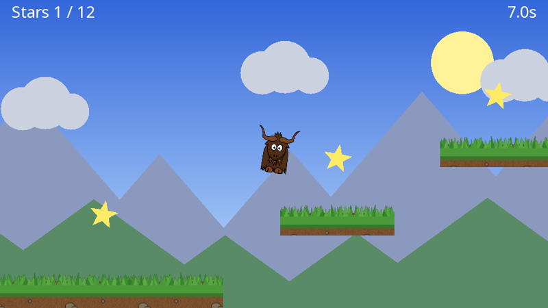

Yak Run, part 3: building a level
The yak can run and jump; now it needs somewhere to go. In this part you will build a long, scrolling level of grassy platforms, with distant scenery, stars to collect, a finishing flag and an on-screen display.

You will learn: tiled textures, custom polygons, drawing from raw draw requests with per-vertex colours, world space versus screen space, a camera that follows the player, parallax scrolling with a second camera, drawing text, and rendering several draw stages on top of each other.
The finished code for this part: code/YakRun/Part3. Box.cs and Yak.cs are unchanged from part 2.
New textures
Save these into the Textures folder as grass.png and soil.png. Both are designed to tile: their left and right edges (and, for the soil, top and bottom) join up seamlessly.


The level
Create Level.cs. It starts with a tiny class for a star, which just needs a position and whether it has been collected:
public class Star
{
public Vector2 Position;
public bool Collected;
}
The level itself is just data: platforms, stars, a start point and a flag.
public const float GrassHeight = 28.0f;
// Falling below this height loses the yak
public const float FallLimit = -800.0f;
public Vector2 Start { get; } = new Vector2(-250.0f, -120.0f);
public Vector2 Flag { get; } = new Vector2(5150.0f, -150.0f);
public List<Box> Platforms { get; } = new List<Box>
{
new Box(-1400.0f, -700.0f, 160.0f, 1300.0f), // a tall wall at the far left
new Box(-1300.0f, -700.0f, 2000.0f, 550.0f),
new Box(820.0f, -700.0f, 500.0f, 500.0f),
new Box(1420.0f, -120.0f, 240.0f, 50.0f),
new Box(1760.0f, -700.0f, 420.0f, 580.0f),
new Box(2280.0f, -40.0f, 200.0f, 40.0f),
new Box(2560.0f, 80.0f, 200.0f, 40.0f),
new Box(2840.0f, -60.0f, 240.0f, 40.0f),
new Box(3180.0f, -700.0f, 700.0f, 530.0f),
new Box(3980.0f, -700.0f, 300.0f, 620.0f),
new Box(4380.0f, -700.0f, 1050.0f, 550.0f),
};
public List<Star> Stars { get; } = new[]
{
new Vector2(300.0f, -40.0f), new Vector2(760.0f, 0.0f), new Vector2(1070.0f, -90.0f),
new Vector2(1540.0f, 40.0f), new Vector2(1970.0f, 0.0f), new Vector2(2380.0f, 90.0f),
new Vector2(2660.0f, 210.0f), new Vector2(2960.0f, 70.0f), new Vector2(3530.0f, -60.0f),
new Vector2(3930.0f, 60.0f), new Vector2(4130.0f, 30.0f), new Vector2(4700.0f, -40.0f),
}.Select(p => new Star { Position = p }).ToList();
The platforms are laid out so every gap can be jumped. (The yak jumps about 190 units high and about 300 units across.)
Drawing the level
public void Draw(IDrawing draw, IDrawStage stage, ITexture grass, ITexture soil, float time)
{
foreach (var platform in Platforms)
{
DrawPlatform(draw, stage, platform, grass, soil);
}
foreach (var star in Stars.Where(s => !s.Collected))
{
// Each star bobs gently and spins
var position = star.Position + new Vector2(0.0f, 6.0f * MathF.Sin((3.0f * time) + star.Position.X));
DrawStar(draw, stage, position, 2.0f * time);
}
// The finishing flag: a pole (a line) and a triangle (a three sided polygon)
var poleTop = Flag + new Vector2(0.0f, 220.0f);
draw.Helpers.DrawLine(stage, CoordinateSpace.World, Flag, poleTop, 8.0f, Colour.WhiteSmoke, 0.6f, 1, rounded: true);
draw.Helpers.DrawColouredPoly(stage, CoordinateSpace.World, Colour.Crimson, poleTop + new Vector2(40.0f, -30.0f), 3, 44.0f,
depth: 0.6f, layer: 1, xScaling: 1.0f, yScaling: 0.7f,
rotation_clockwise_radians: MathF.PI / 2.0f);
}
// A five pointed star built from our own vertices: ten points round the outside (alternating
// long and short) plus one in the middle, joined up as ten triangles
private static void DrawStar(IDrawing draw, IDrawStage stage, Vector2 centre, float angle)
{
var vertices = new Vector2[11];
var indices = new int[30];
vertices[0] = centre;
for (var n = 0; n < 10; n++)
{
var radius = n % 2 == 0 ? 26.0f : 11.0f;
var a = angle + (n * MathF.PI / 5.0f);
vertices[n + 1] = centre + (radius * new Vector2(MathF.Sin(a), MathF.Cos(a)));
indices[(3 * n) + 0] = 0;
indices[(3 * n) + 1] = n + 1;
indices[(3 * n) + 2] = ((n + 1) % 10) + 1;
}
draw.Helpers.Construct()
.Coloured(new Colour(1.0f, 0.92f, 0.4f, 1.0f))
.Poly(vertices, indices)
.Filled()
.SubmitDraw(stage, CoordinateSpace.World, 0.4f, 1);
}
private static void DrawPlatform(IDrawing draw, IDrawStage stage, Box box, ITexture grass, ITexture soil)
{
// Soil: the texture repeats every 128 units in both directions. Texture coordinates above 1.0
// wrap round (TextureCoordinateMode.Wrap), so the maximum coordinate is simply size / 128
draw.Helpers.DrawTexturedQuad(stage, CoordinateSpace.World, soil, Colour.White,
box.Centre, box.Width, box.Height,
depth: 0.8f, layer: 1,
texcoord_max_x: box.Width / 128.0f,
texcoord_max_y: box.Height / 128.0f,
textureMode: TextureCoordinateMode.Wrap);
// Grass: a strip along the top edge, repeating horizontally only, drawn in front of the soil (lower depth).
// Mirror (rather than Wrap) stops the texture's bottom row bleeding into the transparent top edge
var grassCentre = new Vector2(box.Centre.X, box.Top - (0.5f * GrassHeight) + 8.0f);
draw.Helpers.DrawTexturedQuad(stage, CoordinateSpace.World, grass, Colour.White,
grassCentre, box.Width, GrassHeight + 16.0f,
depth: 0.7f, layer: 1,
texcoord_max_x: box.Width / 128.0f,
textureMode: TextureCoordinateMode.Mirror);
}
There is a lot of yak2D in these few methods:
Tiled platforms. Each platform is two textured quads: soil for the body and a strip of grass along the top. Normally texture coordinates run from 0 to 1 across a quad, showing the texture once. Going beyond 1 repeats it. The soil texture is 128 pixels square, so setting the maximum texture coordinate to width / 128 repeats it once every 128 units, however big the platform. See Texture coordinates.
Wrap versus Mirror. The soil uses TextureCoordinateMode.Wrap (repeat). The grass uses Mirror, which flips every other copy. That makes no visible difference to random grass, but it stops the bottom row of the image bleeding into the transparent top edge, which Wrap would otherwise show as a thin line above the grass.
Depth within a layer. The grass (depth 0.7) is in front of the soil (0.8), and stars (0.4) and the flag (0.6) are in front of both. Everything in the level is on layer 1, behind the yak on layer 2.
Custom polygons. The stars are built from our own points: ten round the outside, alternating long and short, plus one in the middle, joined into ten triangles by the index list. Construct().Coloured(...).Poly(vertices, indices).Filled() turns them into something drawable. See The fluent shape builder.
Helpers for the rest. The flag's pole is a DrawLine with rounded ends, and the flag itself is a three sided DrawColouredPoly, squashed and rotated a quarter turn.
The background
Create Background.cs. The scenery behind the level is drawn by its own draw stage, so it can be viewed through its own camera.
A gradient sky from a raw draw request
public const float ParallaxFactor = 0.3f;
// A screen-sized rectangle with a different colour at each corner. The GPU blends between
// vertex colours, which gives a gradient for free. It is built once and re-submitted every frame
private readonly DrawRequest _sky = new DrawRequest
{
CoordinateSpace = CoordinateSpace.Screen,
FillType = FillType.Coloured,
Colour = Colour.White,
Vertices = new[]
{
new Vertex2D { Position = new Vector2(-480.0f, 270.0f), Colour = new Colour(0.20f, 0.40f, 0.85f, 1.0f) },
new Vertex2D { Position = new Vector2(480.0f, 270.0f), Colour = new Colour(0.20f, 0.40f, 0.85f, 1.0f) },
new Vertex2D { Position = new Vector2(480.0f, -270.0f), Colour = new Colour(0.75f, 0.88f, 1.00f, 1.0f) },
new Vertex2D { Position = new Vector2(-480.0f, -270.0f), Colour = new Colour(0.75f, 0.88f, 1.00f, 1.0f) },
},
Indices = new[] { 0, 1, 2, 0, 2, 3 },
Depth = 0.95f,
Layer = 0,
};
The helper functions cover most drawing, but a DrawRequest built by hand gives complete control. This one is a rectangle made of two triangles (six indices into four vertices) with a different colour at each corner. The GPU blends smoothly between vertex colours, so a darker blue at the top fading to a pale blue at the bottom gives a gradient for free.
It is in screen space, so it always fills the view exactly, wherever the camera is. The request is built once, in a field initialiser, and submitted every frame.
Mountains, clouds and a sun
public void Draw(IDrawing draw, IDrawStage stage)
{
draw.Draw(stage, _sky);
// The sun is in Screen space, so it stays put however the camera moves
draw.Helpers.DrawColouredPoly(stage, CoordinateSpace.Screen, new Colour(1.0f, 0.95f, 0.6f, 1.0f),
new Vector2(330.0f, 160.0f), 48, 55.0f, depth: 0.9f);
// Mountains and hills are World space triangles (three sided regular polygons, stretched)
for (var n = 0; n < 18; n++)
{
var x = -900.0f + (n * 230.0f);
var height = 230.0f + (70.0f * MathF.Sin(n * 1.7f));
DrawMountain(draw, stage, new Vector2(x, -200.0f), height + 50.0f, 1.5f, new Colour(0.55f, 0.60f, 0.75f, 1.0f), 0.8f);
DrawMountain(draw, stage, new Vector2(x + 115.0f, -360.0f), (0.6f * height) + 140.0f, 2.4f, new Colour(0.35f, 0.55f, 0.40f, 1.0f), 0.7f);
}
// Clouds: a few overlapping circles (a many sided polygon approximates a circle)
for (var n = 0; n < 8; n++)
{
var centre = new Vector2(-600.0f + (n * 420.0f), 150.0f + (40.0f * MathF.Sin(n * 2.3f)));
var colour = new Colour(0.80f, 0.82f, 0.88f, 1.0f);
draw.Helpers.DrawColouredPoly(stage, CoordinateSpace.World, colour, centre, 32, 38.0f, 0.6f);
draw.Helpers.DrawColouredPoly(stage, CoordinateSpace.World, colour, centre + new Vector2(40.0f, 10.0f), 32, 46.0f, 0.6f);
draw.Helpers.DrawColouredPoly(stage, CoordinateSpace.World, colour, centre + new Vector2(85.0f, -5.0f), 32, 32.0f, 0.6f);
}
}
private static void DrawMountain(IDrawing draw, IDrawStage stage, Vector2 baseCentre, float height, float widthScale, Colour colour, float depth)
{
// A regular triangle of 'radius' r has its top point r above the centre and its base r/2 below
var radius = height / 1.5f;
var centre = baseCentre + new Vector2(0.0f, 0.5f * radius);
draw.Helpers.DrawColouredPoly(stage, CoordinateSpace.World, colour, centre, 3, radius, depth, 0, xScaling: widthScale);
}
- The sun is in screen space too, so it stays in the same place on screen.
- Mountains and hills are triangles (three sided polygons) stretched sideways. They are in world space, so they move when the camera moves.
- Clouds are three overlapping circles each (a polygon with enough sides looks round).
A following camera, and parallax
The level is far wider than the screen, so the camera must follow the yak. And to make the scenery look far away, the background camera moves more slowly than the main camera. This is parallax. Both happen in PreDrawing(), which runs just before each frame is drawn:
public void PreDrawing(IServices yak, float secondsSinceLastDraw, float secondsSinceLastUpdate)
{
// Ease the camera towards the yak, looking a little ahead in the direction of travel
var target = _yak.Position + new Vector2(0.15f * _yak.Velocity.X, 60.0f);
target.Y = Math.Clamp(target.Y, -80.0f, 200.0f);
_cameraFocus = Vector2.Lerp(_cameraFocus, target, 1.0f - MathF.Exp(-6.0f * secondsSinceLastDraw));
yak.Cameras.SetCamera2DFocusAndZoom(_camera, _cameraFocus, 1.0f);
// The background camera moves less, so the scenery seems further away
yak.Cameras.SetCamera2DFocusAndZoom(_backgroundCamera, _cameraFocus * Background.ParallaxFactor, 1.0f);
}
- The camera eases towards a target point instead of jumping to it.
1 - exp(-6 * seconds)moves the same fraction of the remaining distance per second at any frame rate. - It looks a little ahead of the yak in the direction it is running, and a little above it, and its height is limited so it doesn't swing up and down too much.
- The background camera is focused on the same point scaled by 0.3, so the scenery moves at 30% of the speed of the level.
See Cameras.
Three draw stages, three cameras
The game now draws three groups of things, each seen through a different camera:
public bool CreateResources(IServices yak)
{
_yakTexture = yak.Surfaces.LoadTexture("yak", AssetSourceEnum.Embedded);
_grassTexture = yak.Surfaces.LoadTexture("grass", AssetSourceEnum.Embedded);
_soilTexture = yak.Surfaces.LoadTexture("soil", AssetSourceEnum.Embedded);
// Three draw stages, so each group of drawing can be viewed through its own camera
_backgroundStage = yak.Stages.CreateDrawStage();
_levelStage = yak.Stages.CreateDrawStage();
_hudStage = yak.Stages.CreateDrawStage();
_camera = yak.Cameras.CreateCamera2D(960, 540);
_backgroundCamera = yak.Cameras.CreateCamera2D(960, 540);
_hudCamera = yak.Cameras.CreateCamera2D(960, 540);
return true;
}
public void ProcessMessage(FrameworkMessage msg, IServices yak)
{
if (msg == FrameworkMessage.GraphicsDeviceRecreated)
{
CreateResources(yak);
}
}
| Draw stage | Camera | Contents |
|---|---|---|
_backgroundStage |
_backgroundCamera, moving slowly |
sky, sun, mountains, clouds |
_levelStage |
_camera, following the yak |
platforms, stars, flag, yak |
_hudStage |
_hudCamera, never moves |
score, time, messages |
Game state now lives in several fields, and Restart() puts it back to the beginning:
// Game state (plain C# objects, these survive a graphics device reset)
private Level _level;
private Yak _yak;
private Background _background;
private Vector2 _lastSafePosition;
private Vector2 _cameraFocus;
private int _starsCollected;
private bool _finished;
private float _time;
// yak2D resources (created in CreateResources)
private ITexture _yakTexture;
private ITexture _grassTexture;
private ITexture _soilTexture;
private IDrawStage _backgroundStage;
private IDrawStage _levelStage;
private IDrawStage _hudStage;
private ICamera2D _camera;
private ICamera2D _backgroundCamera;
private ICamera2D _hudCamera;
public StartupConfig Configure()
{
return StartupConfig.Default(960, 540, "Yak Run", false);
}
public void OnStartup()
{
_level = new Level();
_background = new Background();
Restart();
}
private void Restart()
{
_level.Reset();
_yak = new Yak(_level.Start);
_lastSafePosition = _level.Start;
_cameraFocus = _level.Start;
_starsCollected = 0;
_finished = false;
_time = 0.0f;
}
Game rules
public bool Update(IServices yak, float secondsSinceLastUpdate)
{
var input = yak.Input;
if (input.WasKeyPressedThisFrame(KeyCode.Escape))
{
return false;
}
if (input.WasKeyPressedThisFrame(KeyCode.R))
{
Restart();
}
var (move, jump) = ReadControls(input);
if (_finished)
{
move = 0.0f;
jump = false;
}
else
{
_time += secondsSinceLastUpdate;
}
_yak.Update(secondsSinceLastUpdate, move, jump, _level.Platforms);
if (_yak.OnGround)
{
_lastSafePosition = _yak.Position;
}
CollectStars();
if (!_finished && _yak.Position.X >= _level.Flag.X)
{
_finished = true;
}
if (_yak.Position.Y < Level.FallLimit)
{
// Fell off the level: back to the last place the yak was standing
_yak = new Yak(_lastSafePosition);
}
return true;
}
private static (float move, bool jump) ReadControls(IInput input)
{
var move = 0.0f;
if (input.IsKeyCurrentlyPressed(KeyCode.Left) || input.IsKeyCurrentlyPressed(KeyCode.A)) move -= 1.0f;
if (input.IsKeyCurrentlyPressed(KeyCode.Right) || input.IsKeyCurrentlyPressed(KeyCode.D)) move += 1.0f;
var jump = input.WasKeyPressedThisFrame(KeyCode.Space) ||
input.WasKeyPressedThisFrame(KeyCode.Up) ||
input.WasKeyPressedThisFrame(KeyCode.W);
foreach (var id in input.ConnectedGamepadIds())
{
var stick = input.GamepadAxisValue(id, GamepadAxis.LeftX);
if (MathF.Abs(stick) > 0.25f)
{
move = stick;
}
jump |= input.WasGamepadButtonPressedThisFrame(id, GamepadButton.A);
}
return (Math.Clamp(move, -1.0f, 1.0f), jump);
}
private void CollectStars()
{
foreach (var star in _level.Stars.Where(s => !s.Collected))
{
if (Vector2.Distance(star.Position, _yak.Position) < 50.0f)
{
star.Collected = true;
_starsCollected++;
}
}
}
Each update the yak moves using the level's platforms, then the rules are checked:
- Standing on something remembers a safe position. Falling below the level's
FallLimitputs the yak back there. - Touching a star collects it.
- Passing the flag finishes the level: the controls stop and the clock stops.
- R restarts.
The HUD
public void Drawing(IDrawing draw, IFps fps, IInput input, ICoordinateTransforms transforms, float secondsSinceLastDraw, float secondsSinceLastUpdate)
{
_background.Draw(draw, _backgroundStage);
_level.Draw(draw, _levelStage, _grassTexture, _soilTexture, _time);
_yak.Draw(draw, _levelStage, _yakTexture);
DrawHud(draw);
}
private void DrawHud(IDrawing draw)
{
// HUD text is in Screen space: (0,0) is the middle of the screen, +Y is up, and the
// virtual screen is 960 x 540. A string's position is the top of the text
var stars = $"Stars {_starsCollected} / {_level.Stars.Count}";
draw.DrawString(_hudStage, CoordinateSpace.Screen, stars, Colour.White, 28.0f,
new Vector2(-460.0f, 255.0f), TextJustify.Left, 0.5f, 0);
draw.DrawString(_hudStage, CoordinateSpace.Screen, $"{_time:0.0}s", Colour.White, 28.0f,
new Vector2(460.0f, 255.0f), TextJustify.Right, 0.5f, 0);
if (_time < 4.0f && !_finished)
{
draw.DrawString(_hudStage, CoordinateSpace.Screen, "Arrows / A D to run, Space to jump", Colour.White, 22.0f,
new Vector2(0.0f, 150.0f), TextJustify.Centre, 0.5f, 0);
}
if (_finished)
{
draw.Helpers.DrawColouredQuad(_hudStage, CoordinateSpace.Screen, new Colour(0.0f, 0.0f, 0.0f, 0.5f),
new Vector2(0.0f, 20.0f), 620.0f, 150.0f, 0.6f);
draw.DrawString(_hudStage, CoordinateSpace.Screen, "You made it!", Colour.Gold, 56.0f,
new Vector2(0.0f, 80.0f), TextJustify.Centre, 0.5f, 0);
draw.DrawString(_hudStage, CoordinateSpace.Screen, $"{_starsCollected} stars in {_time:0.0} seconds. R to run again",
Colour.White, 24.0f, new Vector2(0.0f, 0.0f), TextJustify.Centre, 0.5f, 0);
}
}
Text is drawn with DrawString, which submits one textured quad per letter to a draw stage, using yak2D's built-in font. The HUD is in screen space: (0,0) is the middle of the screen, the edges are at plus and minus 480 across and 270 up and down, and the position given is the top of the text. TextJustify sets whether the x position is the left edge, centre or right edge. See Text.
Rendering the stages on top of each other
public void Rendering(IRenderQueue q, IRenderTarget windowRenderTarget)
{
// Each draw stage is drawn through its own camera. Depth is cleared in between,
// so each stage is drawn completely on top of the one before
q.ClearDepth(windowRenderTarget);
q.Draw(_backgroundStage, _backgroundCamera, windowRenderTarget);
q.ClearDepth(windowRenderTarget);
q.Draw(_levelStage, _camera, windowRenderTarget);
q.ClearDepth(windowRenderTarget);
q.Draw(_hudStage, _hudCamera, windowRenderTarget);
}
All three stages are rendered onto the window, in order. Between them, the depth buffer is cleared. Depth values written by one stage stay in the depth buffer and are tested against by the next stage, so without the clears, something in the background could hide something in the level. Clearing depth between stages means each is simply drawn on top of the one before. See Depth between draw stages.
The sky covers the whole window, so we no longer need to clear the window's colour.
Run it
Run to the flag, collecting as many stars as you can. Fall off, and you are put back where you last stood.
Tip
Try designing your own level by editing Platforms and Stars. Or add a second row of mountains with a parallax factor of 0.15, drawn behind the first (with a greater depth) by another camera.
Next
The game works. In part 4 it gets some polish: glowing stars, ripples when you collect them, and a fade to grey when you fall.